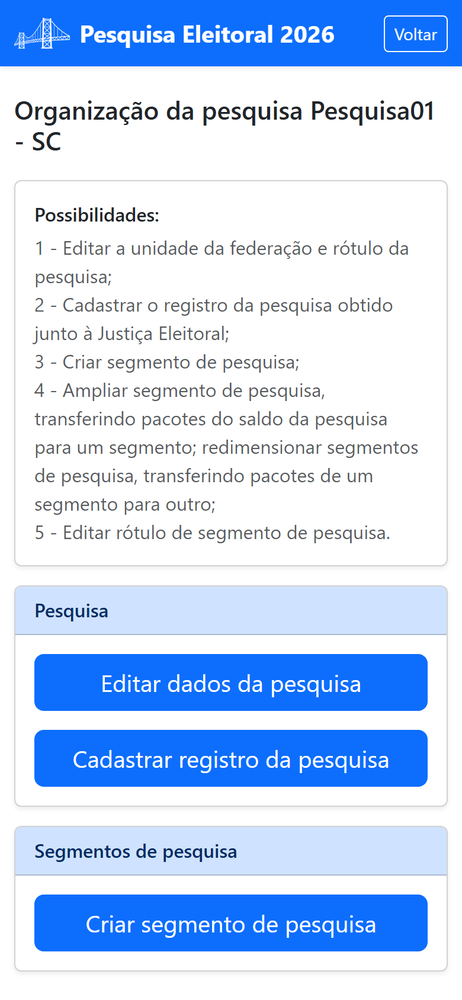

Parte 3 — Modo de operação
7. Organizar a pesquisa
Em Organizar pesquisa você cuida da “moldura” da pesquisa: seu nome e UF, o registro na Justiça Eleitoral e os segmentos. A tela abre com uma lista de Possibilidades e cartões para cada ação.

7.1 Editar dados da pesquisa (rótulo e UF)
Toque em Editar dados da pesquisa para mudar o rótulo (o nome que identifica a pesquisa) e a UF. Se você trocar a UF, o aplicativo pede confirmação, pois isso afeta a lista de municípios do questionário.
Em todo o aplicativo, a pesquisa é identificada por “rótulo - UF” (por exemplo, Pesquisa01 - SC).
7.2 Cadastrar o registro na Justiça Eleitoral
Toque em Cadastrar registro da pesquisa e informe o código de registro da pesquisa eleitoral obtido junto à Justiça Eleitoral.
7.3 Segmentar a pesquisa
Toda pesquisa nasce com um segmento único, e as entrevistas que você adquire entram diretamente nele enquanto a pesquisa não for segmentada. Segmentar, portanto, não é criar os dois segmentos: é criar o segundo — e, daí em diante, os seguintes.
Segmentar é dividir a pesquisa em partes — por exemplo, Capital e Interior — para distribuir e acompanhar cada uma separadamente. No cartão de segmentos:
- Criar segmento — cria um novo segmento na pesquisa;
- Redimensionar segmentos de pesquisa — move pacotes entre segmentos (ou do saldo da pesquisa para um segmento);
- Editar rótulo de segmento — renomeia um segmento.